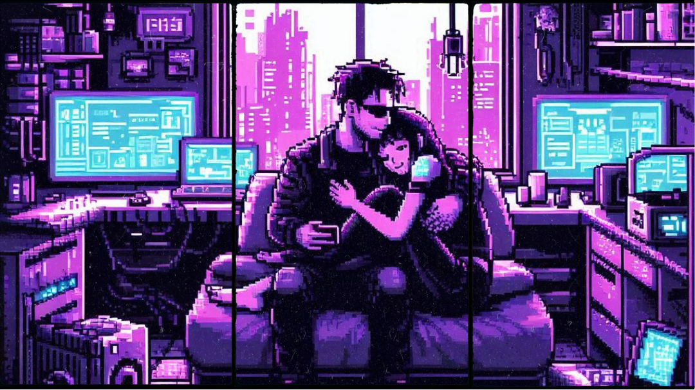
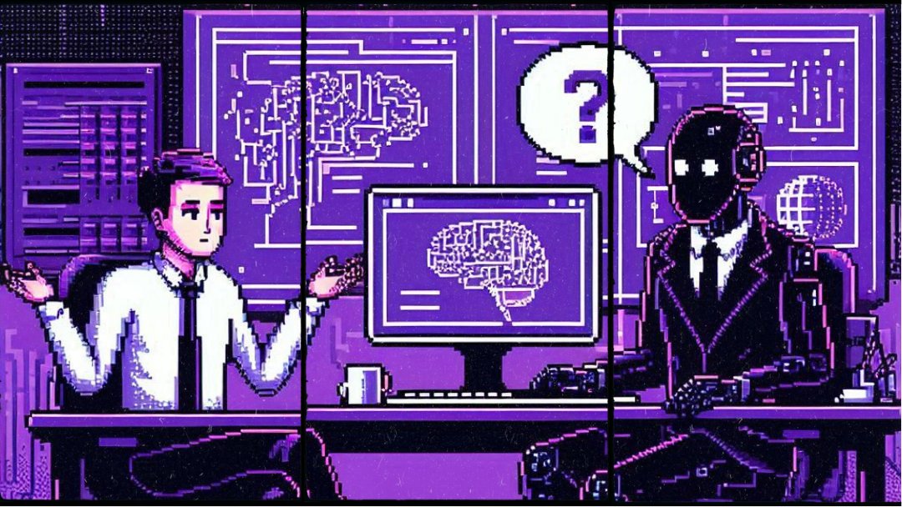

Почему вам не удастся заработать на нейросетях
Наверное, уже все поняли, что эти курсы, даже от знаменитых школ, обещающие помочь вступить в новую эру, больше никогда не работать и взвалить всю работу на искусственный интеллект, мягко говоря, не рассказывают нам всей правды. Но где именно произошел просчет? Нейросети ведь правда умеют генерировать текст и фото за считанные секунды, вы можете убедиться в этом лично. Но что же стоит на пути безбедной жизни без необходимости работать? В начале, вы столкнетесь с тем, что
Вам по-прежнему нужны экспертные знания
Давайте начнем с чего-то очевидного: нейросети не магия. Пусть наши гуру обещают, что достаточно сказать им "Напиши статью о..." и дальше произойдет чудо, в реальности все немного сложнее. Если человек не умеет что-то делать, он не сможет сделать это даже с помощью искусственного интеллекта. Он попросту не сможет понять, хороший ли результат получился или не очень, и не подскажет что и где исправить. Точно так же, недостаточно сказать "сделай мне логотип с медведем". Но что за логотип? Плюшевого, для детской продукции? Плоского и однотонного? Подобно татуировке, мужественного и стильного? Если вы сами не знаете, то нейросеть тоже не ведает ответа. Даже если однажды изобретут чатбота, способного писать хорошо с первого раза, дело в том, что
Человеку нужен человек
Продукцию от нейросети будет с удовольствием потреблять разве что точно такая же нейросеть-потребитель, но люди быстро распознают фальш искусственно сгенерированных видео и статей. Читатели и зрители приходят не посмотреть на красивую картинку или восхититься красотой слога. Будь ваш читатель молодая сама или велосипедист экстремал, ему захочется послушать точно такую же маму или экстремала по ту сторону экрана. Того, кто знает их проблемы и радости, кто видит их как облупленных. Кто прошел тот же путь. Нейросеть понятия не имеет, какого это — спускаться с горы или быть мамой тройни. Люди ценят и ждут ваши продукты из за вас самих, на самом деле, им нужны ВЫ, а не сам текст, картинка или звук. Поэтому, вы должны понимать, что
Успех сам не приходит

Недостаточно просто выставить красивую картинку, сгенерированную Stable Diffusion, подписать текстом, написанным ChatGPT, и ожидать, когда сториз, генерируемые как из рога изобилия, привлекут чье-то внимание. Мозг людей не работает по простейшим алгоритмам "Если изображение достаточно хорошее и текст составлен по всем правилам, я поставлю лайк, расскажу всем друзьям и закажу услугу". Вам придется работать, хоть и быстрее, но не менее усердно чем раньше. Нетрудно прийти к выводу, что
Результат получит только автор курса

Единственный способ легко и быстро заработать на нейросетях — открыть свой обучающий курс. Никто, кроме тех, кто обещает показать золотую жилу в очередной модной профессии, будь то программирование, SMM, или предлагает писать книги через ChatGPT и продавать на маркетплейсах, не получил от этого никакого заработка. Те же, кто пытались, быстро попали в черные списки бирж фриланса.
Заработка на нейросетях не существует, это миф?

Простите, что разбил ваши ожидания и мечты. Пока вы собираете их осколки, у меня есть что предложить взамен. На самом деле, я солгал, а заголовок статьи — кликбейт. Способы заработка существуют, но они не похожи на рекламу
Научитесь решать проблемы с помощью ИИ

Что если не ждать чуда, а самому его творить? Вы ведь и сами можете стать творцами, и воплощать в реальность свои самые безумные фантазии из серии "А вдруг бы существовала штука, которая может делать…"
Устали от того, что кот пожирает цветы? Подключите камеру с распознаванием изображения и соедините ее с системой умного дома, которая бы запускала миксер или подобный шумный прибор каждый раз, когда кот начинает поедать рассаду.
Каждый раз на работе выполняете рутинную задачу, которая не то чтобы сложная, скорее именно монотонная? Создайте алгоритм, который рассортирует файлы, поставит галочки там, где надо, или конвертирует таблицу в Экселе во что вам угодно.
Внедряйте нейросети в свои проекты

Верстаете бесконечные одинаковые сайты на WordPress? Добавьте систему рекомендации на основе просмотренных товаров в интернет магазин. Или систему фильтрации, не дающую отправить комментарий с потоком нецензурщины в блог.
Нейросети перевернули наш мир с ног на голову, перенеся нашу жизнь в фантастический фильм шестидесятых годов. И, хотя они не принесут нам лёгких денег, они правда способны облегчить нашу работу в десятки раз, в этом их предназначение. Теперь у человечества есть друг и помощник, с которым мы будем двигаться вдвоем по жизненному пути. Впереди нас обоих ждёт много свершений, и у вас есть отличная возможность вписать себя в историю, которая пишется прямо на ваших глазах